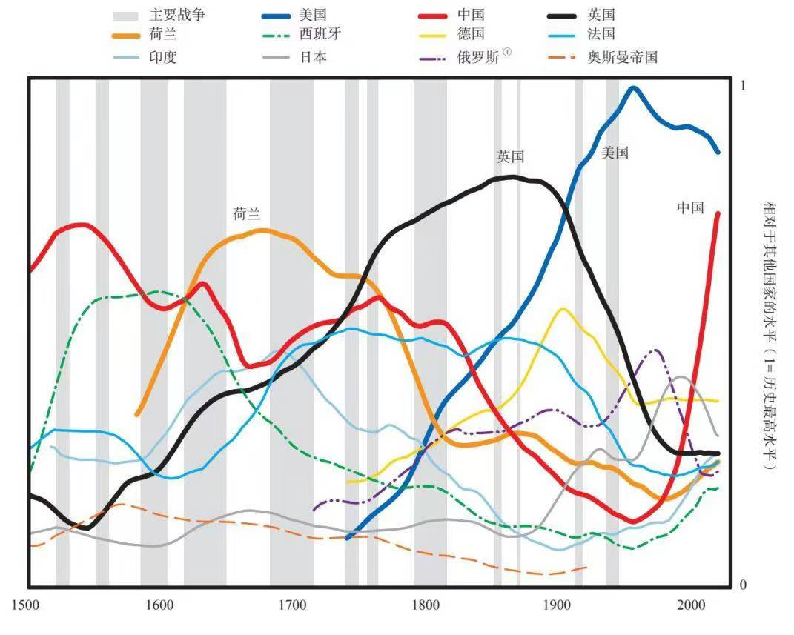
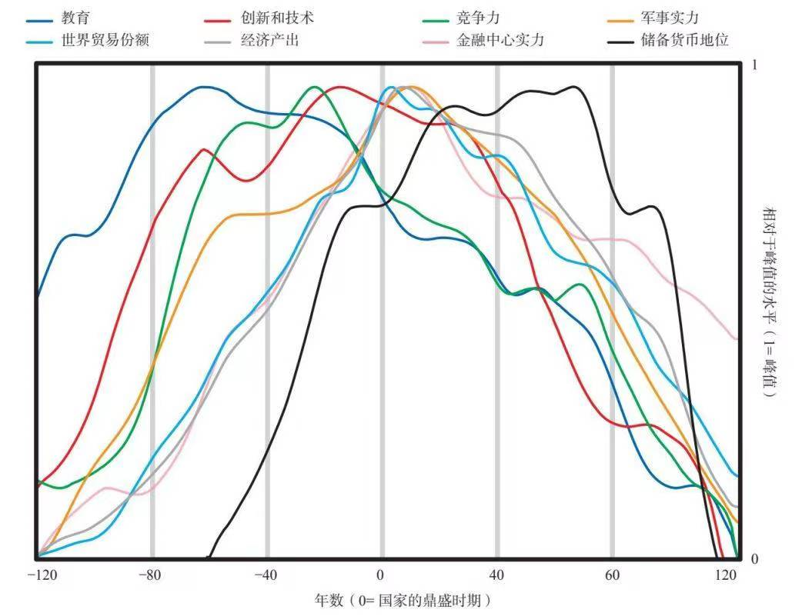
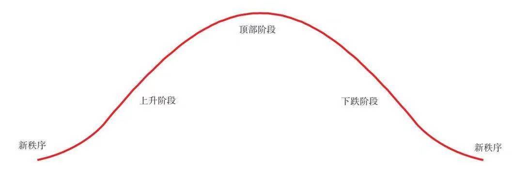
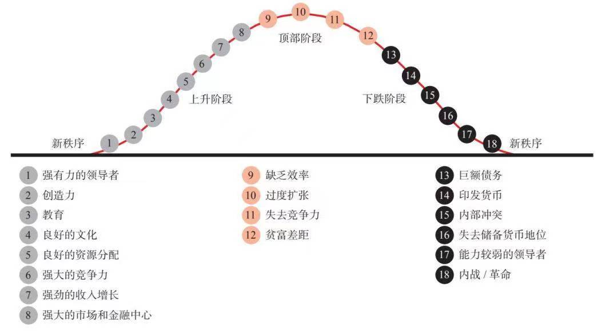

认知 01C
#认知之旅 day28
【长周期认知补充（十）】
书中的第二部分，回顾了过去500年三大主要储备货币国家（荷兰、英国、美国）的兴衰历程。并以它们作为例证，讲述之前提过的：
- 财富和权力的8个决定因素
(1)教育，(2)竞争力，(3)创新和技术，(4)经济产出，(5)世界贸易份额，(6)军事实力，(7)金融中心实力，(8)储备货币地位。
- 内部秩序与混乱周期的六个阶段
1.新秩序开始，新领导层巩固权力
2.资源配置体系与政府官僚机构建立和完善
3.出现和平与繁荣
4.支出和债务严重过度，贫富差距和政治分歧扩大
5.财政状况糟糕，冲突激烈
6.出现内战/革命
然后再回到第一阶段，整个周期循环往复。
我们跟着作者回顾了500年世界发展史【请自行阅读第8-11章】，在一遍又一遍轮回中，加深对于周期的认知与识别。今天这一篇认知之旅，主要是回头贴上第一章的总结内容。在看了每一大国阶段的详细分析后，再去看总结才有了更深的体悟。
当然在阅读的时候我们也要留意：1）作者在构建模型时，为了从全局着眼、看清一般规律，而放弃了一些细节。因此当面对局部分析时，我们需要结合更多历史知识更加精细地推断。2）任何模型指标的提取构建都有一定的主观性，然后再主观地寻找匹配的因果关系加以佐证。当我们学习他人的模型、看他人的分析报告时，也要保留质疑的态度，去发现解释力不足的地方、然后尝试改进与完善。
以下参考内容部分节选整合自《原则：应对变化中的世界秩序》第1章。
下图显示过去500年里11个主要国家的相对财富和权力。

我们仔细研究后会发现，较粗的四条线代表四个最重要的国家：荷兰、英国、美国和中国。三个国家持有了最近的三种储备货币——当前是美元，之前是英镑，再之前是荷兰盾。将中国纳入最主要国家的原因是，中国已成为世界第二大国家，它在大约1850年以前的大部分时间里一直很强大。
以下简述上图反映的情况：
• 中国曾经在几百年里一直占据主导地位（在经济和其他领域一直领先于欧洲），不过从19世纪的第一个十年开始急剧衰落；
• 荷兰作为一个相对很小的国家，在17世纪的第一个十年成为世界储备货币帝国；
• 英国的发展轨迹与荷兰类似，在19世纪的第一个十年达到鼎盛；
• 最后，美国崛起，在过去150年里成为世界超级大国，不过其主导地位在二战期间和战后尤为显著；
• 当前，随着中国再次崛起，美国的主导地位相对下降。
下图显示在我研究的所有国家中每项实力指标的平均水平，主要权重集中在最近的三个储备货币国家（即美国、英国和荷兰）。

上图中的曲线清楚地显示出国家兴衰的原因和过程。我们可以看到，提高教育实力可以推进创新和技术，进而扩大世界贸易份额和军事实力，增加经济产出，建设世界领先的金融中心，在一定时期之后，构建起作为储备货币的货币体系。我们还可以看到，在相当长的时间里，其中大部分决定因素保持强劲，之后依据类似的次序跌落。世界储备货币就像世界通用语言一样，往往在国家开始衰落后仍然存在，由于人们已经习惯于使用这种货币，货币存在的时间通常长于国家实力持续的时间。
我将这种具有周期性和相关性的上行或下行变化称为大周期。从总体上看，我们可以将国家兴衰分为三个阶段：

上升阶段：
上升阶段是新秩序建立之后的繁荣建设时期。在这个阶段，国家的基本面较为强劲，因为(a)债务水平相对较低，(b)财富、价值观和政治差距相对较小，(c)人们通过有效合作来创造繁荣，(d)具备良好的教育和基础设施，(e)拥有强有力且有能力的领导者，(f)一个或多个世界主要大国主导着和平的世界秩序，进而发展到……
顶部阶段：
顶部阶段以各种形式的过度状况为特征：(a)高负债，(b)财富、价值观和政治差距巨大，(c)教育水平和基础设施不断下滑，(d)国家内部不同群体之间发生冲突，(e)过度扩张的国家受到新兴对手的挑战，引发国家之间的争斗，这导致……
下跌阶段：
这是一个痛苦的阶段，充满各种争斗和结构性重组，从而导致严重冲突和巨大变革，推动内部和外部新秩序的建立，为下一个新秩序和繁荣建设时期埋下了种子。
现在我们来更详细地考察每个阶段。
上升阶段
进入上升阶段的条件是……
• ……足够强大且有能力的领导者获取权力，设计一个出色的系统，使国家获取更多的财富和权力。我们通过历史上的伟大国家可以看出，这一系统通常涉及……
• ……强大的教育实力，这里所说的教育实力既包括传授知识和技能，也包括培养……
• ……坚韧的性格、良好的修养和职业道德。这些品格通常是在家庭、学校和/或宗教机构培养的。这些品格使人们尊重社会规则、法制和秩序，使国家减少腐败行为，有效地鼓励人们融洽合作来提高生产率。一个国家在这些方面做得越好，就越可能从生产基础产品转向……
• ……创新和发明新科技。例如，荷兰人很有创造力，在鼎盛时期，荷兰的发明占世界主要发明的1/4。其中之一是发明造船术。造出的船能够开到世界各地搜集大量财富。荷兰人还发明了我们所知的资本主义。推进发明通常需要具备……
• ……对全球最佳思维的开放态度，从而学习最佳的行事方式，而且……
• ……劳动者、政府和军队之间通力合作。
上述这一切的结果是，一个国家……
• ……变得更有效率，并且……
• ……在全球市场更有竞争力，这表现为……
• ……全球贸易份额不断增长。你通过当前情况可以看到，美国和中国的经济产出和全球贸易份额几乎旗鼓相当。
• 随着一个国家的国际贸易增多，它需要保护自己的贸易路线和海外利益，做好自卫准备，所以必须发展强大的军事实力。
如果进行顺利，这一良性循环就会推动……
• ……收入强劲增长，从而可投资于……
• ……基础设施、教育和研发。
• 国家必须打造激励和支持机制，扶持有能力创造或者获得财富的人们。在以往案例中，大多数最成功的国家都采用了资本主义的手段，激励和扶持那些富有成效的创业者。中国也利用市场激励和支持人们致富。要想更好地提供激励机制和金融支撑，国家……
• ……需要发展资本市场。最重要的是发展贷款、债券和股票市场。这使人们得以将储蓄转化为投资，为创新和发展提供资金，也让那些创造伟大成就的人得以分享他们的成功。擅长发明的荷兰人创建了第一家公开上市的公司（荷兰东印度公司）和第一个为其融资的股票市场。这些都是经济机器不可缺少的组成部分，也给荷兰带来了巨大的财富和权力。
• 因此，所有最伟大的国家都在发展世界领先的金融中心，从而吸引和分配当时的资本。阿姆斯特丹是荷兰在鼎盛时期的世界金融中心，伦敦是英国在强盛时期的世界金融中心，纽约是现在的世界金融中心，而中国正在推动上海迅速成为世界金融中心。
• 如果一个国家通过扩大国际交易，变成最大的贸易国家，它就可以用本国货币支付外贸交易，世界各地的人们也希望存储这种货币，这种货币就会变成世界主要储备货币。相较于其他国家，这个国家便可以以更低的利率得到更多的借款，因为别人希望以这种货币发放贷款。
这一系列因果关系促成相互扶持的经济、政治和军事实力，自有历史记载以来，这些实力就是相辅相成的。所有世界上最强大的国家都是沿着这条轨迹向顶部阶段发展的。
顶部阶段
在顶部阶段，国家维持着使其崛起的成功，但在成功的回报中也埋下了衰落的种子。随着时间的推移，偿债负担不断加重，从而打破了使其崛起的自身强化机制。
• 这时，国家既富有又强大，劳动者获取更多的收入。但是，劳动力成本相对提升，竞争力下降，因为其他国家的劳动者愿意接受更低的工资。
• 与此同时，其他国家自然会复制领先大国的方法和技术，这进一步降低了领先大国的竞争力。例如，英国造船商雇用荷兰设计师，设计了更好的船舶，并由更廉价的英国工人制造，这使英国人更具竞争力，导致了英国的崛起和荷兰的衰落。
• 此外，随着领先大国的人民变得更富有，他们往往不会像以前那样努力工作，而更享受悠闲生活，追求生活中更精美但经济效益较低的东西，在极端的情况下，人们会变得颓废。在走向顶部阶段的过程中，从那些通过个人奋斗获得财势的人，到那些继承财富和权力的人，每代人的价值观都不一样。新一代的年轻人没有经历过太多风风雨雨，习惯于奢侈的生活，这使他们在挑战面前更加脆弱。
• 此外，随着人们习惯富裕生活，他们会更趋于推断好时光会持续下去，于是通过借款来享受优越的生活，从而导致了金融泡沫。
• 在资本主义制度下，金融收益的分配不均，导致贫富差距扩大。财富差距是自我强化的，富人利用更多的资源来扩大自己的权势；并且还会影响政治体系，使其为己谋利，并给予子女更多的特权，比如为他们提供更好的教育，从而造成了富人与贫困者在价值观、政治和发展机会上的差距。因此，那些不太富裕的人觉得这个体制不公平，由此产生怨恨情绪。
• 只要大多数人的生活水平仍在提高，这些分歧和怨恨就不会酿成冲突。
在顶部阶段，主要大国的财政状况开始发生变化。拥有储备货币给予它们一种“过分的特权”。例如，美国因此可以增加借款，从而陷入更深的债务之中。这样做可以在短期内提高主要大国的购买力，但长期来看，削弱了国家的实力。
• 不可避免的是，国家开始过度借款，不断地从外国债权人那里举借大量债务。
• 虽然这在短期内提高了消费力，但从长期来看，它削弱了国家的财政健康和货币价值。换句话说，当进行大量借款和支出时，国家看起来非常强大，但其财政实力实际上已经削弱。为了维持超出自身能力的实力，国家不断借款，用来支撑国内的过度消费，为国际军事冲突提供资金，这是维持国家地位所必需的措施。
• 此外，维持和捍卫国家的成本比收益还高，因此维持一个国家变得无利可图。例如，大英帝国变得庞大、官僚，失去了竞争优势，同时其竞争对手（尤其是德国）不断崛起，从而掀起了日益昂贵的军备竞赛和世界大战。
• 富裕国家从储蓄更多的贫困国家借款，从而陷入债务之中，这是财富和权力转移的最早迹象之一。这个过程始于20世纪80年代的美国，当时美国的人均收入是中国的40倍，美国开始从中国借款。因为美元是世界储备货币，中国人希望存储美元。
• 一旦国家开始找不到新的贷款人，那些持有国家货币的人就会设法出售和退出这种货币，而不是购买、存储、放贷和兑换它。这时，国家的实力开始衰落。
下跌阶段
下跌阶段通常缘于国内经济疲弱和内部斗争，或缘于成本高昂的外部斗争，或两者兼具。在通常情况下，国家的衰落是逐步发生的，然后骤然终止。
在内部……
• 一旦债务变得极其庞大，经济出现衰退，国家无法再借到偿还债务所需的资金，就会陷入严重困境，被迫在债务发生违约和增印大量货币之间做出选择。
• 这时，国家几乎总是选择增印大量货币，起初是渐进地进行，最终是大规模发行。这导致货币贬值和通胀加剧。
• 一般来说，在政府陷入融资困境的同时，国家还面临一系列挑战：财政和经济状况不佳，财富、价值观和政治差距巨大，贫富之间以及不同民族、宗教教徒和种族之间的内部冲突严重激化。
• 这会导致政治极端主义，使左翼或右翼民粹主义势力抬头。左派试图重新分配财富，而右派则设法让富人保住财富。这是一个“反资本主义阶段”，在这个阶段，人们通常把各种问题归咎于资本主义、资本家和精英。
• 在这些时期，富人通常被加征税收，当富人担心自己的财富和福祉被剥夺时，他们会转向自己认为更安全的地方、资产和货币。这些资金外流会使国家的税务收入减少，导致典型的、自我强化的空心化趋势。
• 一旦财富外流变得严重，国家就会禁止这种行为。那些想要逃离的人开始感到恐慌。
• 这些动荡不安的局势导致生产率下降，使经济总体规模缩小，招致更多的冲突，人们为如何分配日益缩减的资源而争斗。于是，左翼和右翼民粹主义领导人出现，他们承诺会控制局面并恢复秩序。在这一时期，制度面临最大的挑战。因为它无法控制无政府状态。最有可能发生的是，强有力的民粹主义领导人控制乱局和恢复秩序。
• 随着国内冲突升级，某种革命或内战将会爆发，推动财富再分配和巨大变革。这可以以和平的方式进行，维持现有的内部秩序，但更多的是通过暴力手段改变了秩序。例如，财富再分配的罗斯福新政是相对和平的变革，而改变德国、日本、西班牙、苏联和中国国内秩序的革命（也是出于同样的原因，并发生在20世纪30年代）则明显更具暴力性。
这些内战和革命创造了我所称的新的内部秩序。内部秩序的改变可能不会导致世界秩序的改变，只有当造成内部混乱和不稳定的力量与外部挑战交织在一起时，整个世界秩序才会改变。
在外部……
• 当一个崛起的大国有能力挑战现有大国和现有的世界秩序时，发生重大国际冲突的风险就会上升。特别是在现有大国发生内部冲突的时期，因为崛起的国际对手通常会设法利用这种国内弱势。如果崛起大国已经具备与现有大国相当的军事实力，局势就会更加危险。
• 抵抗外国对手的自卫耗资巨大，但这一支出是必要的，尽管主要国家的国内经济状况不断恶化、处于支付能力最弱的时期。
• 由于没有和平裁决国际争端的可行机制，这些冲突往往是通过测试彼此实力来解决的。
• 随着更大挑战的来临，主要国家需要在战斗与退让之间做出艰难的抉择。战斗和战败是最糟糕的，但退让也是糟糕的，因为退让会让对手继续进攻，也让国家在考虑站边的其他国家面前表现得懦弱。
• 恶劣经济状况会加剧财富和权力斗争，不可避免地导致某种战争。
• 战争的代价极其高昂，与此同时，它推动必要的结构性变革，重新调整世界秩序，使之适应财富和权力的新现实。
• 对一个正在衰落的国家来说，一旦持有其储备货币和债务的债权人对其失去信心，开始抛售这些货币和债务，这就标志着大周期的结束。
当所有这些因素（负债、内战/国内革命、国外战争、对货币失去信心）交织在一起时，世界秩序的改变通常就近在咫尺。
下图简要显示这些因素的典型发展轨迹。

对当前所处位置的预览
如前所述，1930—1945年是最后一个主要的破坏和重组时期，此后迎来了建设时期和世界新秩序（始于1945年）、新的全球货币体系（于1944年在美国新罕布什尔州的布雷顿森林建立），以及美国主导的世界治理体系（位于纽约的联合国、位于华盛顿的世界银行和国际货币基金组织）。新的世界秩序是以下因素的自然结果：美国成为世界上最富有的国家（当时美国拥有全球2/3的黄金储备，当时黄金是货币），美国是占据主导地位的经济强国（美国的产出占全球整体水平的大约一半），美国也是最强大的军事大国（当时美国垄断了核武器和最强大的常规武器）。
我撰写本书的时候，已经是75年之后了。主要的旧国家（即主要的储备货币国家）正接近长期债务周期的终点，积累了大量债务，而传统的货币政策已经失效。为了填补财政缺口，政治分裂的中央政府最近发放借来的大量资金，央行设法通过大规模印钞来提供融资（即将政府债务货币化）。同时，财富和价值观存在巨大差距，崛起的世界大国与主要世界大国在贸易、科技发展、资本市场和地缘政治方面展开竞争。雪上加霜的是，在我撰写本书时，我们还需要应对一场大流行病。
与此同时，伟大的人类思维与计算机智能携手合作，正在创造应对这些挑战的有效方法。如果我们能够和睦相处，就一定能够度过这段困难时期，进入一个全新的繁荣时期。我也同样相信，未来将会发生根本性的变化，会给许多人带来创伤。